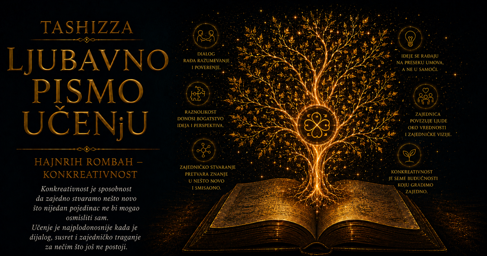

Ljubavno pismo učenju

Kada govorimo o stvaranju, pažnja se gotovo spontano usmerava prema stvaraocu. Umetničko delo vezujemo za umetnika, naučno otkriće za istraživača, građevinu za arhitektu, a novu ideju za osobu u čijem se umu prvi put pojavila. U toj slici stvaralac zamišlja oblik, donosi odluke i prenosi svoju zamisao na svet koji mu stoji na raspolaganju. Kamen čeka vajara, prazan papir pisca, zemljište baštovana, dok se priroda i materijal pojavljuju kao podloga ljudske namere. Takvo razumevanje snažno je obeležilo evropsku kulturu, jer je odgovaralo predstavi čoveka kao samostalnog subjekta koji svojim znanjem, voljom i umećem uređuje stvarnost.
Iskustvo stvaranja ipak pokazuje složeniji tok. Vajar mora da odgovori na tvrdoću, pravac i skrivene pukotine kamena; arhitekta na svetlost, vetar, nagib terena i način života ljudi koji će koristiti prostor; lekar na reakcije organizma koje se ne mogu unapred potpuno predvideti. Umetnik ponekad menja prvobitnu zamisao kada boja, rečenica ili melodija otkriju mogućnost koju nije mogao da vidi pre početka rada. Baštovan priprema zemljište, bira seme i usmerava vodu, ali biljka raste prema zakonitostima živog sveta. U svakom od tih procesa ljudska namera ostaje važna, dok konačni oblik nastaje kroz susret sa nečim što poseduje sopstvena svojstva, granice i mogućnosti.
Nemački filozof Hajnrih Rombah pokušao je da tu skrivenu uzajamnost izrazi pojmom konkreativnosti. U njegovoj knjizi Poreklo: filozofija konkreativnosti čoveka i prirode, objavljenoj 1994. godine, stvaranje se pojavljuje kao događaj u kojem čovek i svet zajedno dolaze do novog oblika. Prefiks „kon” upućuje na zajedništvo, dok kreativnost čuva značenje nastajanja nečega novog. Rezultat takvog procesa ne može se u potpunosti izvesti iz početne namere jednog učesnika, jer se mogućnosti otkrivaju tek tokom odnosa, kroz pokušaje, odgovore, prepreke, preobražaje i trenutke u kojima čitava situacija dobija drugačiji smisao.
Rombahova ideja izrasla je iz njegove strukturne ontologije, filozofije koja je stvarnost posmatrala kao živo oblikovanje odnosa. Struktura u njegovom jeziku nema značenje nepomične šeme sastavljene od unapred određenih delova. Ona predstavlja celinu u kojoj svaki činilac dobija smisao kroz odnos sa ostalima, dok istovremeno učestvuje u promeni te celine. Melodija pruža jednostavan primer: pojedinačni ton ima svoju visinu i trajanje, ali njegovo muzičko značenje zavisi od onoga što mu prethodi, od očekivanja koje stvara i od nastavka koji dolazi posle njega. Promena jednog tona može preobraziti napetost, ritam i karakter čitave melodije.
U živim strukturama ta uzajamnost postaje još izraženija. Organizam se tokom razvoja ne sklapa poput mašine prema spoljašnjem nacrtu, pošto svaka nova faza rasta menja uslove iz kojih će nastati naredna. Ćelije se razlikuju kroz međusobne signale, položaj u celini i odgovore na okruženje; razvijeni organi potom menjaju ponašanje čitavog organizma. Sličan tok postoji u jeziku, porodici, zajednici, naučnoj teoriji i ljudskoj ličnosti. Elementi oblikuju celinu, a celina povratno usmerava njihove mogućnosti, zbog čega se razvoj ne može razumeti prostim sabiranjem izdvojenih uzroka.
Konkreativnost opisuje trenutke u kojima takva struktura pronalazi mogućnost koju nijedan učesnik nije unapred posedovao kao završeno rešenje. U ozbiljnom razgovoru sagovornici dolaze sa sopstvenim iskustvom i stavovima, ali smisao koji nastane među njima može prevazići ono što je svako nameravao da kaže. Jedno pitanje menja pravac razmišljanja, neslaganje otkriva skrivenu pretpostavku, a tuđa rečenica omogućava čoveku da jasnije razume sopstvenu misao. Razgovor uspeva kada učesnici sačuvaju svoj glas i istovremeno dopuste da ih susret preobrazi.
Takvo razumevanje menja i predstavu o autorstvu. Stvaralac zadržava odgovornost za sopstvene odluke, znanje i postupke, ali prestaje da izgleda kao apsolutni gospodar procesa. Pisac bira reči i uređuje kompoziciju, dok ga već napisani tekst obavezuje određenim ritmom, likovima i unutrašnjom logikom. Naučnik oblikuje pitanje, bira instrumente i postavlja hipotezu, ali rezultat eksperimenta može prinuditi teoriju da krene putem koji istraživač nije očekivao. Arhitekta donosi konačne odluke, a uspeh građevine zavisi od toga koliko je pažljivo odgovorio na mesto, materijal, klimu i potrebe ljudi.
Za Rombaha je upravo u toj sposobnosti odgovaranja ležalo dublje značenje slobode. Sloboda se često zamišlja kao mogućnost da čovek bez prepreka sprovede ono što je unapred odlučio. Strukturna sloboda nastaje kada osoba ume da prepozna mogućnosti konkretne situacije i zajedno sa njom pronađe put koji na početku nije bio potpuno vidljiv. Takva sloboda traži inicijativu, jer bez ljudskog delovanja mogućnost može ostati neostvarena, ali traži i prijemčivost, pošto kruta vezanost za prvobitni plan lako zatvara prostor u kojem bi se pojavilo bolje rešenje.
Ravnoteža delovanja i slušanja zahteva znanje, disciplinu i zrelost. Muzičar mora da ovlada instrumentom kako bi prepoznao trenutak u kojem kompozicija može krenuti neočekivanim putem. Istraživač mora dobro poznavati metodu da bi razlikovao značajno odstupanje od greške u merenju. Učitelj mora razumeti gradivo kako bi mogao da promeni objašnjenje kada vidi da učenik polazi od drugačijih pretpostavki. Konkreativnost zbog toga nema veze sa pasivnim prepuštanjem okolnostima; ona označava najbudniji oblik učešća, u kojem čovek ume da vodi proces i da istovremeno uči iz njegovog razvoja.
U obrazovanju ova ideja dobija naročitu snagu. Znanje se ne može premestiti iz nastavnikove svesti u učenikovu poput predmeta koji prelazi iz jedne ruke u drugu. Učenik ga ponovo izgrađuje, povezuje sa sopstvenim iskustvom, proverava, greši, postavlja pitanja i postepeno pretvara u sposobnost samostalnog mišljenja. Nastavnik tokom tog procesa upoznaje granice svojih objašnjenja, otkriva neočekivane puteve do pojma i menja način na koji razume sopstveno gradivo. Čas tada postaje prostor u kojem se istovremeno razvijaju učenik, učitelj i zajednički jezik znanja.
Konkreativna nastava ne izjednačava stručnjaka i početnika, niti pretvara istinu u rezultat glasanja. Iskustvo, obrazovanje i odgovornost nastavnika ostaju presudni, ali autoritet znanja dobija svoju punoću tek kada omogućava učeniku da razvije sopstvenu sposobnost razumevanja. Učitelj koji očekuje jedino ponavljanje svojih rečenica može proizvesti poslušnost, dok radoznalost i misaona samostalnost zahtevaju prostor za pitanje, sumnju i proveru. Učenje oživljava kada disciplina pruža oslonac, a razgovor otvara mogućnost da se znanje usvoji kao unutrašnja snaga čoveka.
Rombahova zamisao ima jednako važne posledice za odnos prema prirodi. Priroda u konkreativnom procesu više ne izgleda kao bezglasno skladište sirovina. Šuma predstavlja istorijski oblikovanu zajednicu zemljišta, vode, biljaka, životinja, gljiva i mikroorganizama; reka pripada čitavom predelu kroz koji prolazi; plodno zemljište nosi trag bezbrojnih procesa koji su ga stvarali mnogo duže nego što traje jedan ljudski život. Svaka intervencija ulazi u tu mrežu odnosa, pa njen ishod zavisi i od odgovora sredine koji često premašuje početne proračune.
Poljoprivreda jasno pokazuje razliku između gospodarenja i pažljivog učešća. Đubrivo, navodnjavanje i izbor sorti mogu povećati prinos, ali dugoročna plodnost zavisi i od strukture tla, kruženja vode, mikroorganizama, oprašivača, biljne raznovrsnosti, erozije i klimatskih promena. Odluka usmerena samo prema neposrednom rezultatu može vremenom oslabiti uslove od kojih zavise buduće žetve. Konkreativan pristup zato povezuje ljudske potrebe sa sposobnošću sredine da se obnavlja, odgovara i nastavlja sopstveni razvoj.
I u društvenom životu posledice odluka nastaju unutar samog procesa. Porodica se ne oblikuje samo pravilima koja su odrasli postavili, jer dete svojim temperamentom, pitanjima i odgovorima menja način na koji se čitava porodica organizuje. Zajednica se razvija kroz odnos sećanja, ustanova, sukoba, poverenja i svakodnevnih postupaka svojih članova. Organizacija koja kažnjava svaku grešku istovremeno stvara kulturu prikrivanja, dok organizacija sposobna da pažljivo analizira neuspeh može izgraditi pouzdanije znanje i snažniju odgovornost. Svaki odgovor menja prostor u kojem će sledeći odgovor postati moguć.
Konkreativnost se zato ne može svesti na prijatan dogovor ili na sastanak tokom kojeg svi iznose ideje. Zajedničko stvaranje zahteva strukturu sposobnu da primi povratnu informaciju, razlikuje utemeljeno saznanje od proizvoljnog mišljenja i koriguje odluku kada činjenice pokažu njene slabosti. Moć, stručnost i odgovornost mogu biti različito raspoređene, ali nijedan položaj ne pruža potpun pogled na složenu situaciju. Čovek na mestu gde nastaje problem često vidi nešto što udaljeni rukovodilac ne može videti, dok rukovodilac raspolaže širom slikom koja pojedinačnom učesniku izmiče. Dobro rešenje raste iz njihove sposobnosti da ta različita znanja dovedu u plodan odnos.
Savremeni razvoj tehnologije svakodnevno potvrđuje vrednost takvog mišljenja. Softverski sistem menja se tokom upotrebe, jer korisnici otkrivaju potrebe koje projektanti nisu predvideli, opterećenje pokazuje skrivene slabosti, a održavanje otkriva posledice ranih arhitektonskih odluka. Tehnologija istovremeno menja ljude koji je koriste: preobražava njihove navike, očekivanja, način rada i razumevanje mogućeg. Rezultat nastaje kroz dug odnos zamisli, sistema, korisnika i okruženja, pa odgovornost projektanta obuhvata i svet ponašanja koji će njegova tehnologija pomoći da se razvije.
Srodna pitanja danas se pojavljuju u saradnji čoveka i veštačke inteligencije. Digitalni alat može ponuditi rečenicu, sliku, melodiju ili projektno rešenje koje korisniku otvara pravac o kojem ranije nije razmišljao. Prihvatanje, menjanje ili odbacivanje predloga pomaže čoveku da jasnije odredi sopstvenu nameru, dok način ljudske upotrebe povratno utiče na budući razvoj sistema. Rombahova filozofija pruža dragocen jezik za razumevanje tog uzajamnog procesa, mada pitanja autorstva, pouzdanosti, prava i odgovornosti zahtevaju dodatne pravne, etičke i tehničke kriterijume.
Etička dubina konkreativnosti postaje vidljiva kada shvatimo da svojim postupcima ne proizvodimo samo pojedinačne rezultate, nego i uslove iz kojih će nastajati buduće mogućnosti. Grad koji uklanja trgove, parkove i mesta spontanog susreta menja oblike zajedništva dostupne njegovim stanovnicima. Obrazovni sistem koji nagrađuje isključivo poslušnost oblikuje odnos budućih generacija prema autoritetu, pitanju i sopstvenoj sumnji. Tehnologija koja ljudsku pažnju neprekidno pretvara u robu postepeno utiče na sposobnost usredsređivanja, razgovora i javnog rasuđivanja. Odgovornost zbog toga obuhvata i svet koji stvaramo za odluke ljudi koji dolaze posle nas.
Rombah je kroz konkreativnost doveo u pitanje duboko ukorenjenu sliku čoveka koji stoji naspram sveta i dokazuje slobodu količinom vlasti koju nad njim može da uspostavi. Ljudsko dostojanstvo u njegovoj filozofiji raste iz sposobnosti da se deluje sa stvarnošću, da se njene mogućnosti pažljivo čuju i da se sopstvena moć upotrebi bez prisvajanja čitavog procesa. Čovek ostavlja trag u svetu, dok svet istovremeno oblikuje čoveka, njegove potrebe, znanje i granice.
Učenje predstavlja jedan od najlepših oblika takvog zajedničkog nastajanja. Knjiga ostaje ista na polici, ali u svakom ozbiljnom čitanju stupa u drugačiji svet iskustva i pitanja. Učenik se menja kroz ono što razume, a stečeno znanje dobija novu snagu kroz način na koji će ga povezati, primeniti i preneti drugima. Učitelj tada više nije samo čuvar gotovih odgovora, nego učesnik u događaju čiji konačni domet ne može unapred izmeriti.
Konkreativnost nas poziva da stvaranju priđemo sa hrabrošću i skromnošću koje se međusobno dopunjuju. Hrabrost je potrebna da započnemo, preuzmemo odgovornost i unesemo svoju sposobnost u svet; skromnost nam omogućava da čujemo odgovor stvarnosti, promenimo neodrživu zamisao i priznamo doprinos koji ne pripada samo nama. Kada se te dve snage sretnu, nastaje mogućnost istinskog novog početka: dela, odnosa, saznanja ili zajednice čiji oblik niko nije posedovao pre nego što je proces započeo.